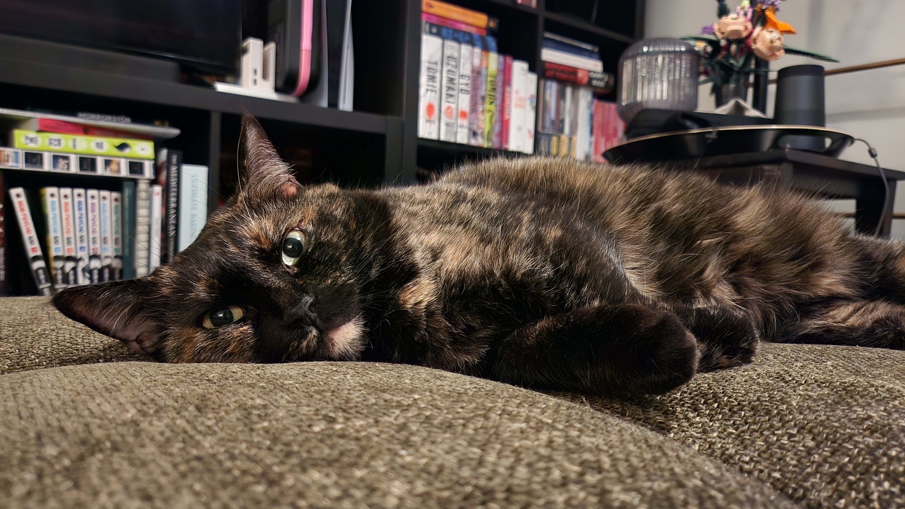

to all those who exist in the universe, greetings
Բոլոր անոնց որ կը գտնուին տիեզերգի միգամածութիւնէն անդին, ողջոյններ:
. ݁₊ ⊹ . ݁˖ . ݁
There is an esoteric quality to early computing. Scientists, engineers, fledglings in their field, created room-sized behemoths out of vacuum tubes and hand-soldered their connections. They breathed life into computers—and they sang.
. ݁₊ ⊹ . ݁ ⟡ ݁ . ⊹ ₊ ݁.
I am always thinking about the Golden Record. About Voyager. After touching the moon, we reached out, further than we had before, farther that we may dare to reach again, and said hello. We sang, so that beings reaching out to us would know us, too.
. ݁₊ ⊹ . ݁ ⟡ ݁ . ⊹ ₊ ݁.
This is a present from a small distant world, a token of our sounds, our science, our images, our music, our thoughts, and our feelings. We are attempting to survive our time so we may live into yours.
↓

. ݁₊ ⊹ . ݁˖ . ݁
Above: Tesla. She's five! Creating the webbed site: Deanna nondmo; writer, artist, and one half of Tesla's parents. About 40 minutes outside Boston.
bite back in anger
in turning divine we tangle endlessly